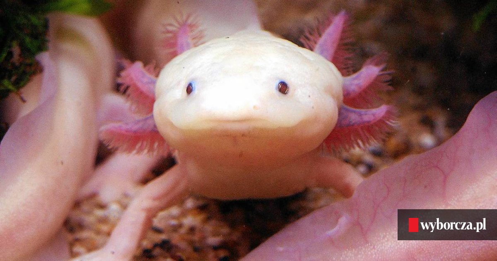

Od kilku lat ambystoma meksykańska, zwana salamandrą meksykańską lub aksolotlem meksykańskim, stanowi prawdziwy trend pośród akwariowych zwierząt domowych. Jej przyjacielski wygląd i wyraziste kolory sprawiają, że zwraca na siebie uwagę i jest ozdobą akwarium. Pomimo domniemanej egzotyki aksolotle meksykańskie są stosunkowo łatwe w pielęgnacji. Jest często nazywany małym smokiem. Płaz ten swój atrakcyjny wygląd zawdzięcza pierzastym zewnętrznym skrzelom i dwóm parą odnóży. Zarówno skrzela, odnóża, jak i część ogona może im odrosnąć.